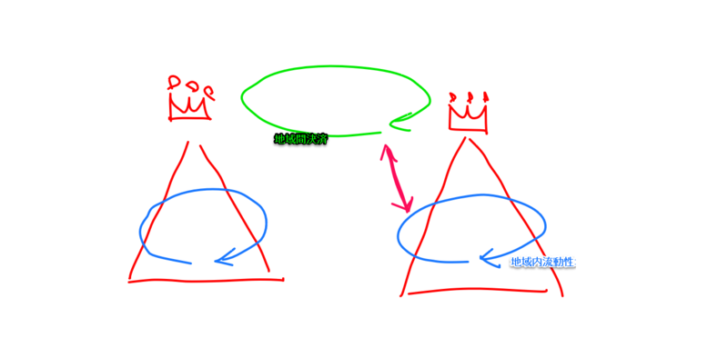

『貨幣システムの世界史』
公開日：
")
- 作者: 黒田明伸
- 出版社/メーカー: 岩波書店
- 発売日: 2003/01/28
- メディア: 単行本
- クリック: 17回
- この商品を含むブログ (18件) を見る
絶版なのかな？ 定価の倍にあたる 5,000 円で泣く泣く購入。今さっき Amazon をみたら 19,800 円になっていたので、それよりはマシだと自分を慰めるしかない。中古本を買っても著者にお金が入るわけでなし、こういう本はなるべく電子化してほしいと思う。
さて、肝心の内容についてだが――まずは問題提起から。
貨幣をめぐるもっとも根源的な設問、なぜ貨幣は受領されうるのか、という問題に行き着かざるをえない。なぜならそこでは、諸通貨は、明らかに国家などの諸権威によらず流通しており、しかも同じ金属内容の実態が違った違った通貨単位で別の評価を与えられて併存することもあるのだから、素材価値からも独立して受領されていると言わざるをえない。
「国家に対する信用こそが通貨の価値だ」といわれることはよくあるが、国家がなくても通過が流通することはある（第1章に挙げられた「マリア・テレジア銀貨」がその良い例）。また、「素材価値が関係するんじゃない？」という意見も正鵠を射てはいない。たとえば、日本の一円玉の製造原価は 1 円 50 銭ほどだという（1円玉原価割れも 金属値上がりでおカネづくり一苦労 :日本経済新聞）。本書でも原価割れしてでも質のよい銅銭を供給すべきだとする中国の官僚の話しが出てくる。
では、なぜなのだろうか。親切なことに、序章で結論が述べられているのでそれを引くことにする。
結論からいうと、本書が示す貨幣の受領性についての回答も、やはり多元的なものとなる。すなわち、歴史的にも論理的にも、貨幣は最初から諸貨幣として存在したのである、と。
( ﾟдﾟ)!?
ちょっと難しかったのだけど、自分の言葉で言い直せばこういうことだ。
（手交）貨幣というのは膨大な貨幣ストックの一部として存在し、その一部が決済につかわれる（流動性をもつ）。たとえばマリア・テレジア銀貨は、すでに膨大な料のマリア・テレジア銀貨が蓄積されているがゆえに、その一部として価値をもつ*1。そして、損傷したり退蔵されたりしてアクティブに取引される量は年々減少していく。だから、その分毎年新規に供給する必要がある*2。そうでないと、いずれ貨幣の循環回路が失われ、経済が混乱する。
これに変わる貨幣を新規に政府が発行しようとしても、それはなかなかうまく行かない。その膨大なストックをそっくり置き換えられるわけではないからだ*3。

貨幣はコミュニティに根付いている（もしくは、いた）。それは政府が貨幣の統一に工夫をこらそうと、貨幣が地域内決済（地域流動性―現地通貨）と地域間決済（地域間兌換性―地域間決済通貨）の二つに分離する傾向を持っていたことでも分かる。この二つは、“贈与（贈与）”と“交換（交換）”に対置させてみても面白いと思う。
それにしても、多くの政府が貨幣の一元化を進めた（そして、挫折した）のはなぜなんだろうね。今で言うグローバリズム（とはいえその領内でだけの話だが）の恩恵をうけるためだったのだろうか。単に徴税のためだったのかもしれない。なぜ古代日本は中国の銅銭を輸入してまで貨幣制度を導入しようとしたのだろうか。税についてはちょっと面白そうな本を手に入れたので、そっちを読みながら考えてみようかと思う。
皮肉にも、現代では貨幣の一元化が実現している。歴史に“革命”と呼ばれるできごとは数多あれど、この貨幣の意味の転換こそが最大の革命だったのかもしれない。一方で、恐慌が全世界を駆け巡ることにもなったのだけど。